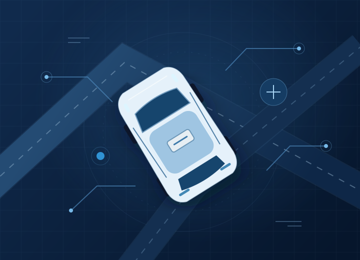
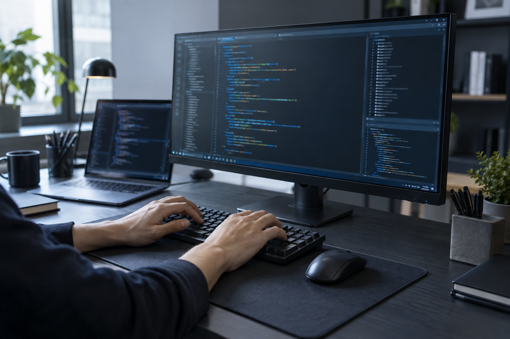
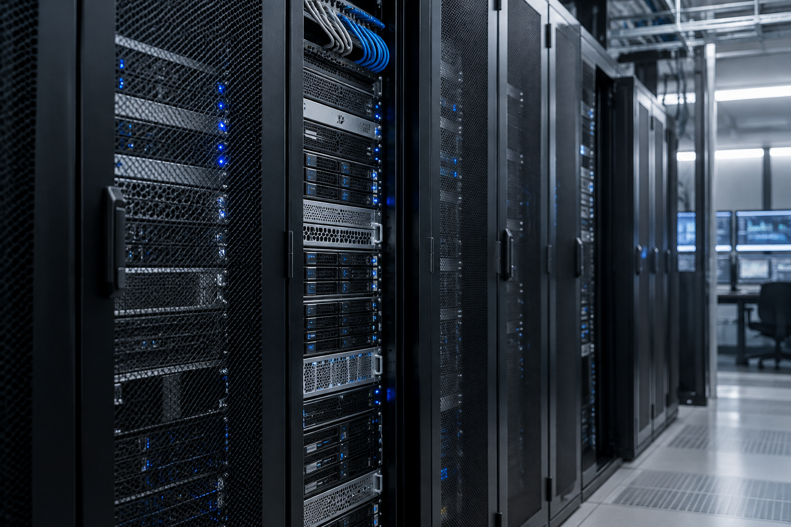
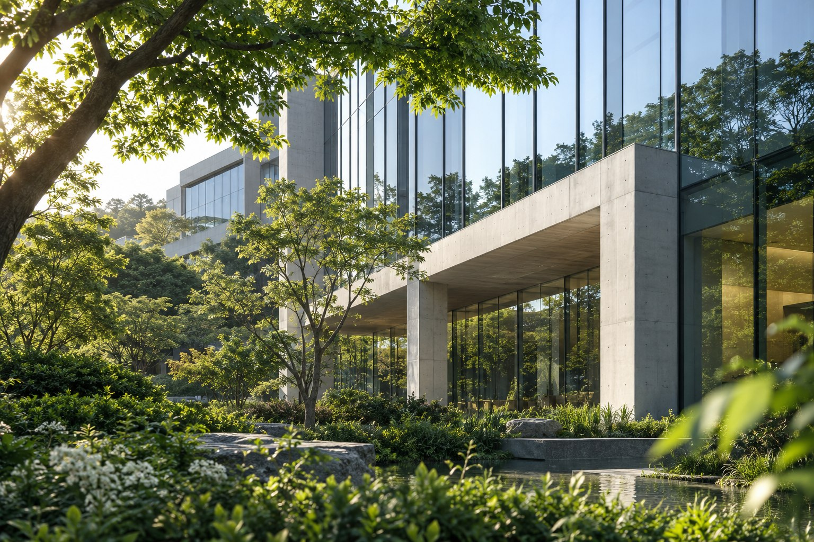

ABOUT MUST
경험과 노하우로,
완성도 높은
시스템을 만듭니다
2022년에 설립한
IT 서비스 기업, 머스트정보기술.
웹·모바일 소프트웨어와 업무 솔루션을 개발하고,
시스템 운영과 IT 컨설팅을 제공합니다.
새로운 연구와 도전으로 고객이 만족하는 시스템을 만들겠습니다.
012022년 설립소프트웨어 개발 및 공급
02SI · SM시스템 개발, 운영 및 유지보수
03IT 컨설팅사업 제안과 ISP, 정보화 전략 수립
OUR BUSINESS
비즈니스의 다음을
만드는 기술
설계하고, 만들고, 더 나아가도록.
기업의 IT 전 과정을 함께 연결합니다.

UNDERSTAND. DESIGN. BUILD.SYSTEM INTEGRATION
비즈니스를 이해하고,
필요한 시스템을 만듭니다.
요구사항을 정리하고 철저한 분석과 설계를 통해
업무에 맞는 시스템을 개발·구축합니다.
- 금융·공공·서비스·제조유통·통신·행정
- 웹·모바일 SW 및 업무 시스템 개발
- IT 자산관리·민원분석·ERP 솔루션

MONITOR. IMPROVE. EVOLVE.SYSTEM MANAGEMENT
안정적인 오늘,
더 나아지는 시스템.
운영체제를 구축하고 정기점검을 통해
안정적인 시스템 운영을 지원합니다.
- 운영체제 구축 및 시스템 유지보수
- 정기점검을 통한 장애 발생 최소화
- 체계적인 장애 처리 시스템 확립
STRATEGYTECHNOLOGYBUSINESSIDEAS
INTO
ACTION.THINK. CONNECT. TRANSFORM.
INTO
ACTION.THINK. CONNECT. TRANSFORM.
IT CONSULTING
지금의 고민에서,
다음의 방향을 찾습니다.
업무에 기반한 통합·개별 정보시스템의 방향을
검토하고 IT 전략과 이행 계획을 수립합니다.
- 사업 제안 및 ISP
- 환경·현황 분석과 전략 수립
- 목표 모델 설계 및 통합 이행 계획

OUR VISION
연구와 도전으로
새로운 가치를 만듭니다
새로운 연구와 개발을 통해 앞서가는 회사.
고객이 만족하는 결과를 위해 계속 도전하겠습니다.
새로운 연구개발고객 만족체계적인 운영
기업비전 알아보기PROJECT EXPERIENCE
시스템 구축으로 쌓아온
수행 경험
LET’S CONNECT
당신의 다음을,
함께 이야기해요
시스템 개발·운영 및 IT 컨설팅 문의
이메일 shlee@mustinfotech.co.kr